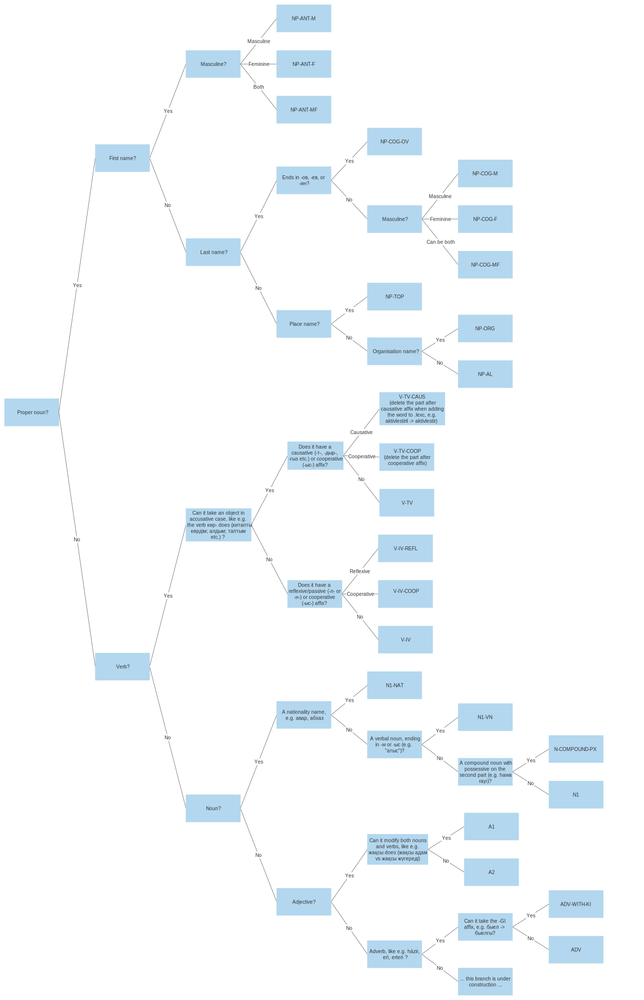

APERTIUM-KAA: A MORPHOLOGICAL TRANSDUCER AND DISAMBIGUATOR FOR KARAKALPAK
What follows is the documentation for apertium-kaa – a morphological transducer and disambiguator for Karakalpak.
Apertium-kaa is a morphological transducer and disambiguator for Karakalpak, currently under development. It is intended to be compatible with transducers for other Turkic languages so that they can be translated between. It’s used in the following translators (at various stages of development):
1 Extending apertium-kaa
1.1 Stems and categories
To extend apertium-kaa with new words, we need which lemmas and categories they must have in apertium-kaa.kaa.lexc. Below we list possible categories of words. Example sentences were taken from Wikipedia.
Category |
| Comment |
V-TV |
| A transitive verb. Any verb that can take an object in accusative case is transitive. E.g., the verb `же-': Түлки қусты жеди. |
VAUX |
| Auxilliary verb. Вспомогательный глагол. |
PAREN |
| Parenthesis; вводное слово. |
PHRASE |
| Фраза, идеома. |
